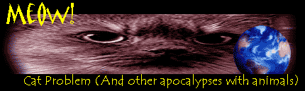
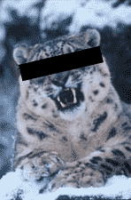
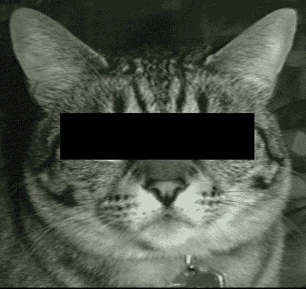
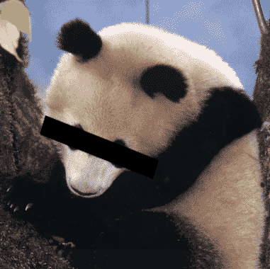
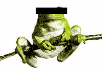

<html>


<!-- Mirrored from www.exitmundi.nl/meow.htm by HTTrack Website Copier/3.x [XR&CO'2014], Mon, 28 Jun 2021 00:55:15 GMT -->
<!-- Added by HTTrack --><meta http-equiv="content-type" content="text/html;charset=UTF-8" /><!-- /Added by HTTrack -->
<head>
<meta http-equiv="Content-Language" content="en-us">
<meta http-equiv="Content-Type" content="text/html; charset=windows-1252">
<meta name="GENERATOR" content="Microsoft FrontPage 4.0">
<meta name="ProgId" content="FrontPage.Editor.Document">
<title>Cat Apocalypse!</title>
<base target="_self">
</head>

<body bgcolor="#000000" text="#FFFFFF" link="#00FFFF" vlink="#FF00FF">

<p align="center"></p>
<blockquote>
  <p class="MsoNormal" style="line-height: 12.0pt; tab-stops: -72.0pt -36.0pt" align="center"><font face="MS Sans Serif"><span lang="EN-US" style="letter-spacing:-.15pt"><font size="4"><font color="#FF9900"><span lang="EN-US" style="mso-fareast-font-family: Times New Roman; mso-ansi-language: EN-US; mso-fareast-language: EN-US; mso-bidi-language: AR-SA; letter-spacing: -.15pt">What’s
  furry, has claws and triggers the end of the world? You guessed it. It’s
  your trusted, feline friend: your cat. And cats are not the only animals
  causing problems. Rabbits do it. Frogs do. Yes, even the cute Giant Panda is
  helping to blow the world to kingdom come. Sit back -- and shiver!</span></font><o:p>
  </font>
  </o:p>
  </span>
  </font></p>
  <p class="MsoNormal"><span lang="EN-US"><font face="MS Sans Serif"><div align="right">
    <table border="0" width="120" align="right" height="600">
      <tr>
        <td width="100%"><script type="text/javascript"><!--
google_ad_client = "pub-5046374505441754";
google_ad_width = 120;
google_ad_height = 600;
google_ad_format = "120x600_as";
google_ad_type = "text_image";
//2007-01-16: Indexbreed-grijzig, Grafieten hap
google_ad_channel = "9064366162+6276089418";
google_color_border = "CC0000";
google_color_bg = "CCCCCC";
google_color_link = "CC0000";
google_color_text = "333333";
google_color_url = "666666.html";
//--></script>
<script type="text/javascript"
  src="../pagead2.googlesyndication.com/pagead/f.txt">
</script></td>
      </tr>
    </table>
  </div>If you felt
  sorry for the dinosaurs, consider this. At this very moment, we’re in the
  middle of a period of mass extinction that’s actually WORSE than the one that wiped
  out the dinosaurs. You read that right. More species go extinct at this very
  moment than during the last days of the dinosaur!<br>
  <br>
  You see, it took the dinosaurs thousands of years to die out altogether.
  Today, the speed of extinction is higher -- much higher. Each day, an estimated
  seventy species go bust. That’s seventy species! Gone. Not to be seen ever
  again. A few centuries more, and half of all species will no longer be here.
  Thanks to the meteor impact called 'mankind'.<br>
  <br>
  <font color="#FF9900">Now, that IS a problem.</font> In nature, everything is
  linked to everything else. Everything that lives relies on other living things. And the
  really bad news is, of course, that we are also part of nature. What would we
  eat if it wasn’t for our crops and livestock? Shoes? And what would we breathe?<br>
  <br>
  It would take a library to explain what exactly is happening to the animals
  and the plants on our planet. For now, some brief highlights will do, just to
  show you how serious and weird matters really are. So enter the cats, the
  frogs, the snails, the insects - the whole zoo.<br>
  <p><font face="MS Sans Serif" color="#FFFF00" size="4">File
          # 1: <br>
          The Case of Osama Bin Leopard</font></p>
  <p><font color="#00FF00">Remember
          Afghanistan? In 2002, the US army used cluster bombs and oxygen
          sucking fuel bombs to rid the Afghan caves of Al Qaida bad guys.
          Unfortunately, someone else was hiding there too. That was the snow leopard,
          one of the rarest animals on the planet.<br>
          <br>
          Just picture it. Osama's bearded boys, holding hands with the mighty
          snow leopard in some cave. Then: BOOM! BURN! CHOKE! Bye-bye boys. And
          bye-bye snow leopard.</font></p>
          <p class="MsoNormal"><font color="#00FF00">But
          while there are plenty of bearded boys left on the planet, the same cannot be
          said of the leopard. The animal has probably gone extinct in
          Afghanistan by now -- a by-product of war. Few people know of it. And
          even fewer seem to care. The mighty predator of the mountains happened
          to be a stand in the way in a silly human war over religion, power and
          such. At this moment, there are an estimated 5,000 snow leopards left
          on the planet. That could be too little for survival.</font>
  <p><br>
  <font face="MS Sans Serif" color="#FFFF00" size="4">File
          # 2:<br>
          The Case of the Evil Cat</font></p>
  <p><font color="#00FF00">As
          I write this, Molly the cat is on my lap, having a nap. Lizzy, my
          other cat, is outside, chasing birds, or picking a fight with another
          cat. You see, my next door neighbor has two cats as well. The
          neighbors on the other side have three cats, the neighbors after that
          have five. In the street where I live, there are more cats than
          people!</font></p>
          <p class="MsoNormal"><font color="#00FF00">And
          that is a problem. All those cats catch lots of birds and mice and
          rats and butterflies. Biologically speaking, cats are eating a huge
          hole in the food chain. No, seriously! According to several alarming
          reports, this is exactly what is happening in countries like the
          United Kingdom, Sweden and my own country, Holland. Bird species are
          vanishing, mouse subspecies are going extinct. All because of Molly,
          and Lizzy, and the other many billions of domestic cats that inhabit
          the planet today.</font></p>
          <p class="MsoNormal"><font color="#00FF00">Where
          would that all lead? A planet, exclusively inhabited by cats and
          people? Hmmm. Just take a guess. My cat Molly has left my lap now.
          Probably off to catch another mouse.</font>
  <p>&nbsp;</p>
  <p><font face="MS Sans Serif" color="#FFFF00" size="4">File
          # 3:<br>
          The Case Of The &quot;Cute&quot; Panda
          </font></p>
          <p class="MsoNormal"><font color="#00FF00">Humans
          are a friendly species. We like animals. That’s why we can’t stand
          it the Bonobo monkey and the Giant Panda are about to go extinct. No
          way we’ll let the beautiful lion, the cute chimpanzee or the
          impressive elephant go extinct! We build another natural reserve.</font></p>
          <p class="MsoNormal"><font color="#00FF00">But
          hold it. In fact, the species we adore are only a slight minority. Who
          cares for snails,<span style="mso-spacerun:
yes">&nbsp; </span>insects, snakes, lice, or spiders? These species are in
          trouble, too. But they’re not cute enough. Humans simply don’t
          like them. We’ll let them go extinct, and won’t miss a night’s
          sleep over it.</font></p>
          <p class="MsoNormal"><font color="#00FF00">‘Survival
          of the cutest’, is the word for that. Biologists use it sometimes
          when they argue that we’re protecting the wrong species.
          On our lists of ‘endangered species’, there are plenty of
          beautiful and furry and funny animals. But no snails, cockroaches or
          flees. Not to mention the microbes, that are by far the most important
          species on Earth.</font></p>
  <p>&nbsp;</p>
  <p><font face="MS Sans Serif" color="#FFFF00" size="4">File
          # 4:<br>
          The Case of the Dead Frog</font></p>
  <p><font color="#00FF00">It
          is a mystery. Everywhere in the world, frogs are dying. There seems to
          be no specific reason for it. Everywhere around, they’re just
          kicking the bucket, for no apparent reason. There you have it: the
          frog problem.<br>
          <br>
          It could be pollution. It could be the hole in the ozone layer. It
          could be a fungus. It could be acid rain. It could be all these things
          combined.<br>
          <br>
          Whatever the reason, biologists are very worried. Apart from the
          fact that a frogless world would be a rather empty place, the frog
          problem could be some kind of warning. Frogs are known to be quite
          vulnerable. So who’s next?</font> Us?</p>
  <p><br>
  <font face="MS Sans Serif" color="#FFFF00" size="4">File
          # 5:<br>
          Invasion Of The Killer Rabbits</font></p>
          <p class="MsoNormal"><font color="#00FF00">The
          dingo did it. So did the rabbit. They invaded a place where nature
          never meant them to be.</font></p>
          <p class="MsoNormal"><font color="#00FF00">Well,
          `invaded’ isn’t the right word, really. Humans brought them over,
          of course. The Dutch brought their cats to Australia. The British took
          foxes and dogs to New Zealand. The mighty Vikings introduced the cute
          rabbit in Scotland. The gypsies took the gypsy moth to the US. And
          now, there’s trouble all over the place. Down under, there aren’t suppose
          to be any predators. In the US, there aren’t suppose to be any gypsy
          moths. Nature just didn’t expect it.<br>
          <br>
          So disaster strikes. In the US, about a fourth of the agricultural
          gross national product is lost each year to foreign plant pests such
          as the dreaded boll weevil (from Mexico) and the leafy spurge (brought
          by Europeans). In New Zealand, Australia, Scotland and many other
          countries, zillions of rabbits drive the locals insane, digging about
          like crazy.<br>
          <br>
          Not to mention those evil, evil cats again. In New Zealand and
          Australia, the cats gobble up rare birds and mammals. Such as the
          poor, innocent kiwi bird. For crying out loud, the poor thing doesn’t even has
          wings! Evolution thought that without cats, there was no need for
          wings. But evolution got it wrong.<br>
          <br>
          It isn’t a nice thing to say, but the real problem is mankind.
          Humans are in the habit of messing up everything they do everywhere
          they go all of the time.<br>
          <br>
          They are a harmful species, these humans -- almost as harmful as cats.</font>
  </font>
  </span>
</blockquote>
<p><br>
<div align="center">
    <center>
    <table border="0" width="728" height="90">
      <tr>
        <td width="100%"><script type="text/javascript"><!--
google_ad_client = "pub-5046374505441754";
google_ad_width = 728;
google_ad_height = 90;
google_ad_format = "728x90_as";
google_ad_type = "text_image";
//2007-01-16: rood grafiet leaderbord
google_ad_channel = "5833008090";
google_color_border = "CC0000";
google_color_bg = "CCCCCC";
google_color_link = "CC0000";
google_color_text = "333333";
google_color_url = "666666.html";
//--></script>
<script type="text/javascript"
  src="../pagead2.googlesyndication.com/pagead/f.txt">
</script>
      </tr>
    </table>
    </center>
  </div>
<p>&nbsp;</p>
<p><!-- End Webstats4U code -->
</p>
<p align="center"><font size="2">All texts Copyright © Exit Mundi / AW Bruna
2000-2007.<br>
You're not allowed to copy, edit, publish, print or make public any material
from this website without written permission by Exit Mundi.</font></p>
<p><span lang="EN-US"><font face="MS Sans Serif">
</noscript>
  </font>
  </span>
</p>


